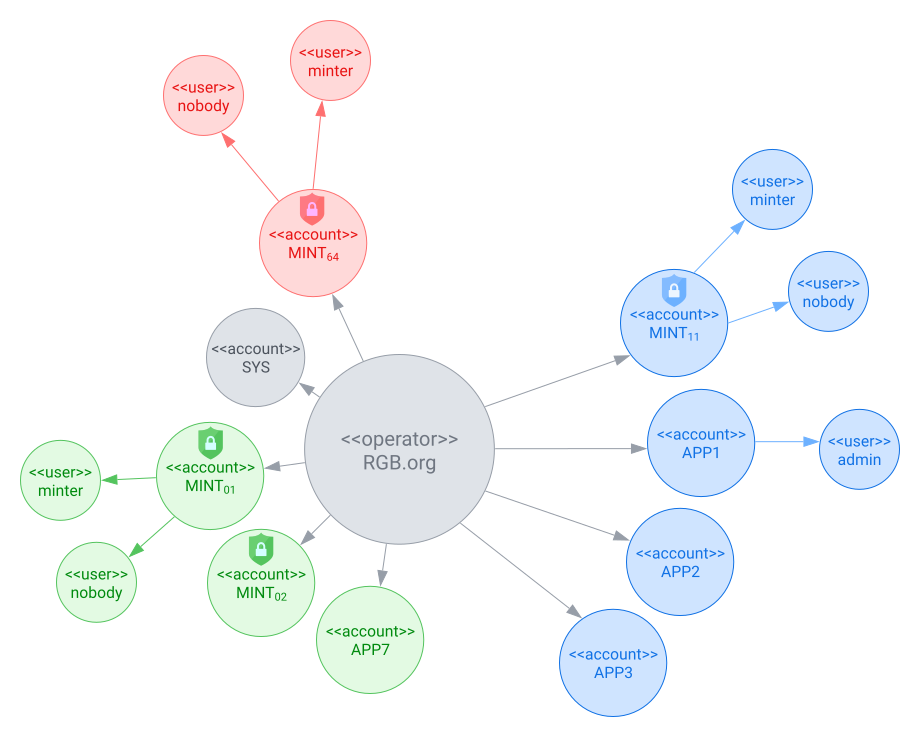
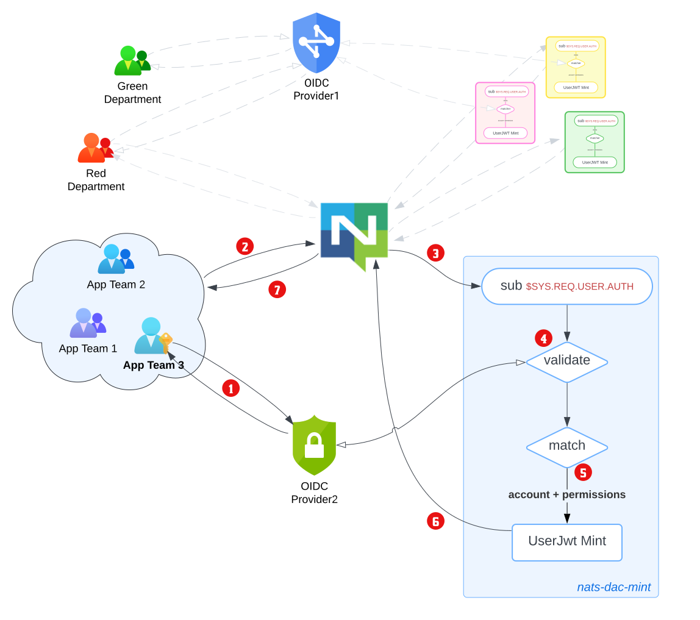

How It Works
This section walks through the auth callout flow using a realistic multi-tenant scenario.
Scenario: RGB.org
The RGB.org organisation has three departments that share a single NATS deployment. A department consists of several teams, with each team developing a set of applications.

The blue department has this setup:
there are three teams:
App Team 1,App Team 2,App Team 3- they have each developed apps that require access to NATS.
- users of
App Teami’s apps have NATS credentials minted by NATS accountAPPi
the department has configured and deployed a shared instance of the nats-iam-broker microservice.
- the microservice connects to NATS using user
minterof NATS accountMINT_11. - minting accounts have an additional user
nobody, that has no permissions.
- the microservice connects to NATS using user
Bob is a member of App Team 3, and wishes to use their in-house app demo-app. This section describes the authentication and authorization flow.

Bob launches
demo-app.demo-appdirects him toOIDC Provider2for authentication, which Bob completes.demo-appreceives back a signed JWT tokenjwt.provider2.bob.
demo-appobtains credentials1 forMINT_11(nobody)and packages this into a NATSauthorization_request(perhaps by callingnats.connect())2.NATS creates a
connection_idfor the Bob’s instance ofdemo-app, and directs theMINT_11(nobody)connection to the blue department’s nats-iam-broker microservice. This is because the microservice connects to NATS usingMINT_11(minter), and the two have a common NATS account. The connection between NATS and nats-iam-broker is private3.nats-iam-broker microservice receives the request.
- it unpacks
jwt.provider2.boband validates the token againstOIDC Provider2. - it performs additional validations, like checking JWT expiry/clock skew, etc.
- an unsuccessful validation reports an
Authorization Violationback to the user.
- it unpacks
nats-iam-broker microservice mints a new JWT.
- it inspects Bob’s user/profile information in
jwt.provider2.bob. - it determines that the account to issue+sign the minted token is
APP3. - it creates a set of unique authorizations for Bob’s
demo-appusage. - it sets a suitable token expiry etc.
- it inspects Bob’s user/profile information in
nats-iam-broker signs the minted JWT, encrypts it for transport and sends it to NATS server.
NATS server decrypts4 and validates the nats-jwt, and binds the authorizations to the client’s
connection_id. Finally, it notifies Bob’s instance ofdemo-appof the successful connection.
Minimal Configuration
A simpler setup consisting of one auth callout account (MINT) and one application account (APP1):
# env.yaml
nats:
url: "nats://localhost:4222"
jwt_expiry_bounds:
min: 1m
max: 1h
service:
name: "my-iam-broker"
description: "IAM Broker"
version: "0.1.0"
creds_file: "/secrets/user.creds"
account:
name: "MINT"
signing_nkey: "<MINT_SIGNING_NKEY>"
xkey_seed: "<XKEY_SEED>"
# idp.yaml
idp:
- description: "My IDP"
issuer_url: "https://idp.example.com"
client_id: "my-client-id"
# rbac.yaml
rbac:
user_accounts:
- name: APP1
public_key: "<APP1_PUBLIC_KEY>"
signing_nkey: "<APP1_SIGNING_NKEY>"
role_binding:
- user_account: APP1
match:
- { claim: aud, value: "my-client-id" }
roles:
- default-access
roles:
- name: default-access
permissions:
pub:
allow: ["app.>"]
sub:
allow: ["app.>"]nats-iam-broker serve env.yaml idp.yaml rbac.yamlFor full configuration details, see the Configuration Reference.
Footnotes
although
nobodyuser credentials have no NATS permissions, storing them externally can facilitate key rotation ofsigning_key(MINT_11).↩︎a (somewhat) arbitrary decision has been made to pass the third-party JWT in the password field, i.e.,
nats.Connect(UserCredentials(MINT_11(nobody)), password=jwt.provider2.bob)↩︎this uses the
XKeyfield. It is optional but recommended.↩︎this uses the
XKeyfield. It is optional but recommended.↩︎